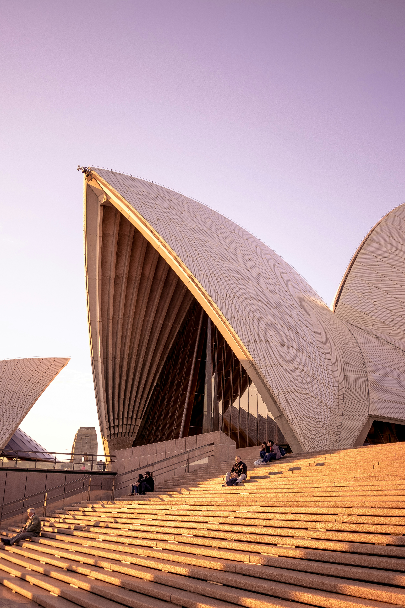
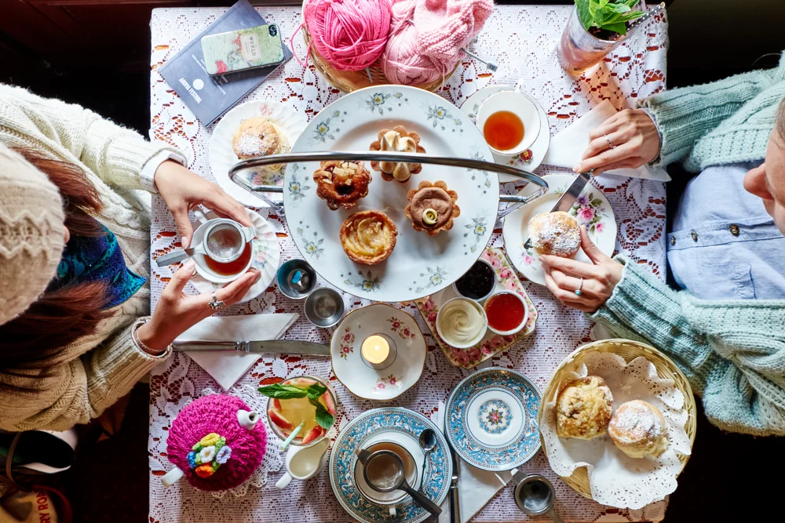

Why Sydney?
Sydney, the Harbour city
Sydney is world-famous for its stunning harbour, featuring the iconic Sydney Opera House and Sydney Harbour Bridge. Known for its sunny climate, the city boasts renowned beaches like Bondi and Manly, alongside a vibrant culture, the historic Rocks district, and breathtaking coastal scenery.
Being so close to the sea gives Sydney a few added bonuses. One of the perks of being near the sea is the availability of fresh seafood. Over the years the city’s chefs have mastered seafood, creating mouth-watering dishes perfect for a summer dinner by the sea. One of the biggest fish markets in the country offers fish so fresh it may just jump out of your shopping basket! We’re joking, of course, but the selection of fresh seafood is truly amazing.
CAFES
My favourite cafe's in Sydney

The Grounds Cafe
Experience The Grounds of Alexandria Cafe, where vibrant energy meets a cozy, inviting atmosphere. As the original venue that started it all, it’s inspired by Founder and Director, Ramzey Choker’s cherished Sunday breakfasts with his family—a special time to connect and enjoy delicious food.
Here, you can savor world-class coffee and seasonally inspired dishes that add a touch of joy to every visit. Our skilled baristas craft exceptional coffee, from our signature Beanstalker to exciting new beans from around the globe.
With everything baked fresh daily in our pastry kitchen, every visit promises high-quality treats and memorable moments, whether you’re dining in or taking something to go.
Address
7a/2 Huntley St, Alexandria NSW 2015
Why try it?
Where everyone’s treated like a local, and locals are treated like family.

The Coffee Factory
At The Factory, coffee becomes a true art form, crafted to bring people together over a shared love for the brew. Set in the historic Locomotive Workshop, this venue combines industrial charm with a deep passion for coffee. Watch the magic as beans transform from raw crackles to rich aromas in our state-of-the-art roastery.
More than just a coffee destination, The Grounds Coffee Factory features a vibrant cafeteria with dishes that perfectly complement our brews. Dive into a world of flavour, join engaging workshops and classes, and connect with fellow coffee enthusiasts. This is where coffee culture comes alive, celebrating innovation and the joy of discovery.
Address
Bay 4a / 2 Locomotive Street South Eveleigh NSW 2015
Why try it?
Where coffee craftsmanship meets immersive innovation and every brew tells a story.

The Tea Cosy
Tucked in a heritage-listed building in Sydney’s historical Rocks area is our hidden gem; The Tea Cosy. We serve delicious scones - baked fresh on premises all day. Relax with a cup of aromatic tea, and tame your appetite with something heartier.
Address
7 Atherden St, The Rocks NSW 2000
Why try it?
Scones and tea like nanna used to make.